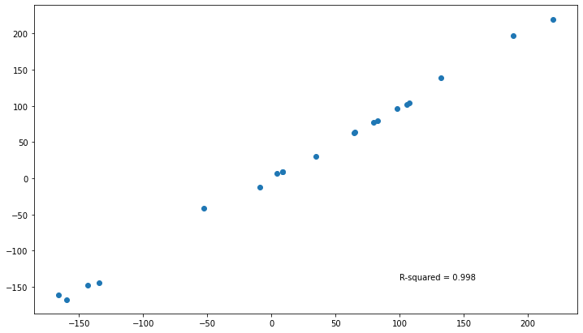

Exploring the functionality within the hime.LinearRegression class¶
[1]:
import os
import numpy as np
import pandas as pd
import seaborn as sns
import matplotlib.pyplot as plt
from sklearn.datasets import make_regression
from sklearn.metrics import r2_score
import session_info
[2]:
current_wd = os.getcwd()
os.chdir(current_wd.split("/notebook")[0])
from hime.linear_model import LinearRegression
os.chdir(current_wd)
[3]:
session_info.show(write_req_file=False)
[3]:
Click to view session information
----- hime 0.0.1 matplotlib 3.3.4 numpy 1.19.2 pandas 1.2.3 seaborn 0.11.1 session_info 1.0.0 sklearn 0.24.1 -----
Click to view modules imported as dependencies
PIL 8.1.2 appnope 0.1.2 backcall 0.2.0 casadi 3.5.5 cffi 1.14.5 colorama 0.3.9 cycler 0.10.0 cython_runtime NA dateutil 2.8.1 decorator 4.4.2 ipykernel 5.3.4 ipython_genutils 0.2.0 ipywidgets 7.6.3 jedi 0.17.2 joblib 0.17.0 kiwisolver 1.3.1 mpl_toolkits NA parso 0.7.0 pexpect 4.8.0 pickleshare 0.7.5 pkg_resources NA prompt_toolkit 3.0.8 psutil 5.8.0 ptyprocess 0.7.0 pyexpat NA pygments 2.8.1 pyparsing 2.4.7 pytz 2021.1 repoze NA scipy 1.5.3 simplejson 3.17.5 six 1.15.0 statsmodels 0.12.2 storemagic NA swig_runtime_data4 NA tornado 6.1 traitlets 5.0.5 wcwidth 0.2.5 zc NA zmq 20.0.0
----- IPython 7.21.0 jupyter_client 6.1.7 jupyter_core 4.7.1 jupyterlab 2.2.6 notebook 6.2.0 ----- Python 3.9.2 (default, Mar 3 2021, 11:58:52) [Clang 10.0.0 ] macOS-10.16-x86_64-i386-64bit ----- Session information updated at 2021-10-21 15:00
Make X and y data¶
[4]:
amount_of_features = 4
X, y, coef = make_regression(n_samples=100,
n_features=amount_of_features,
n_informative=amount_of_features,
noise=5,
coef=True,
random_state=42)
[5]:
coef
[5]:
array([86.47223763, 5.63754967, 27.34070719, 41.48195023])
Fit the model¶
[6]:
df = (pd.DataFrame(X, columns=[f"feat_{x}" for x in range(0, X.shape[1])])
.merge(pd.DataFrame(y, columns=["target"]),
left_index=True,
right_index=True))
[7]:
df.head()
[7]:
| feat_0 | feat_1 | feat_2 | feat_3 | target | |
|---|---|---|---|---|---|
| 0 | 0.852433 | -0.661786 | 0.186454 | -2.025143 | -8.751790 |
| 1 | -0.493001 | -0.208122 | -0.622700 | 0.280992 | -40.948309 |
| 2 | -1.142970 | 0.058209 | 0.153725 | -0.883857 | -126.192510 |
| 3 | 0.375698 | -1.150994 | 0.110923 | -0.544383 | 7.050788 |
| 4 | -1.196207 | -1.106335 | -0.185659 | -0.479174 | -134.050438 |
[8]:
df_train = df.sample(frac=0.8, random_state=69420)
df_test = df.drop(df_train.index)
[9]:
df_train.shape, df_test.shape
[9]:
((80, 5), (20, 5))
Fit the romeo LinearRegression¶
[10]:
reg = LinearRegression(fit_intercept=True,
normalize=True).fit(X=df_train.filter(regex="feat"),
y=df_train["target"],
verbose=False)
[11]:
reg.intercept_, reg.coef_
[11]:
(-0.17172603444702672,
array([87.1558853 , 5.75156338, 26.93403819, 40.45946059]))
[12]:
reg.summary_.round(3)
#reg.score(X, y)
[12]:
| coef | std_err | t | P>|t| | [0.025 | 0.975] | |
|---|---|---|---|---|---|---|
| intercept | -0.172 | 0.652 | -0.263 | 0.793 | -1.471 | 1.127 |
| feat_0 | 87.156 | 0.702 | 124.166 | 0.000 | 85.758 | 88.554 |
| feat_1 | 5.752 | 0.655 | 8.775 | 0.000 | 4.446 | 7.057 |
| feat_2 | 26.934 | 0.661 | 40.767 | 0.000 | 25.618 | 28.250 |
| feat_3 | 40.459 | 0.767 | 52.737 | 0.000 | 38.931 | 41.988 |
[13]:
reg.fit_evaluation_.round(3)
[13]:
| r_squared | r_squared_adj | f_statistic | f_statistic_pvalue | log_likelihood | AIC | BIC | |
|---|---|---|---|---|---|---|---|
| model_evaluation | 0.997 | 0.997 | 5759.822 | 0.0 | -247.64 | 503.28 | 512.808 |
Show the available methods and attributes of the fitted model¶
[14]:
np.array(dir(reg))
[14]:
array(['__class__', '__delattr__', '__dict__', '__dir__', '__doc__',
'__eq__', '__format__', '__ge__', '__getattribute__',
'__getstate__', '__gt__', '__hash__', '__init__',
'__init_subclass__', '__le__', '__lt__', '__module__', '__ne__',
'__new__', '__reduce__', '__reduce_ex__', '__repr__',
'__setattr__', '__setstate__', '__sizeof__', '__str__',
'__subclasshook__', '__weakref__', '_check_n_features',
'_get_param_names', '_get_tags', '_more_tags', '_repr_html_',
'_repr_html_inner', '_repr_mimebundle_', '_validate_data', 'aic',
'bic', 'bse', 'coef_', 'conf_int', 'copy_X', 'df_model',
'df_resid', 'ess', 'f_pvalue', 'fit', 'fit_evaluation_',
'fit_intercept', 'fvalue', 'get_params', 'intercept_',
'is_fitted_', 'llf', 'loglike', 'mse_model', 'mse_resid',
'mse_total', 'nobs', 'normalize', 'params', 'positive', 'predict',
'predictors', 'pvalues', 'resid', 'rsquared', 'rsquared_adj',
'set_params', 'ssr', 'summary_', 'target', 'tvalues',
'uncentered_tss'], dtype='<U17')
[15]:
reg.conf_int()
[15]:
array([[-1.47056253, 1.12711046],
[85.75757243, 88.55419817],
[ 4.44589287, 7.0572339 ],
[25.61788376, 28.25019263],
[38.93114387, 41.9877773 ]])
[16]:
reg.df_resid
[16]:
75
[17]:
intercept = reg.intercept_
coefs = reg.coef_
[18]:
coefs
[18]:
array([87.1558853 , 5.75156338, 26.93403819, 40.45946059])
[19]:
coefs.reshape(1,-1)
[19]:
array([[87.1558853 , 5.75156338, 26.93403819, 40.45946059]])
[20]:
coefs*df_train.filter(regex="feat").head()
[20]:
| feat_0 | feat_1 | feat_2 | feat_3 | |
|---|---|---|---|---|
| 30 | 68.998063 | 6.660948 | -32.703002 | -40.702921 |
| 4 | -104.256447 | -6.363156 | -5.000546 | -19.387131 |
| 71 | -93.931800 | 0.369711 | 29.329837 | -19.094109 |
| 50 | 81.166543 | 5.929859 | 16.474913 | -27.387899 |
| 56 | -40.891419 | 6.783625 | 49.328580 | -53.415923 |
[21]:
tmp_x = df_train.filter(regex="feat").assign(intercept=1).set_index("intercept").reset_index().values
[22]:
tmp_x = reg.intercept_ * tmp_x
[23]:
np.linalg.inv(np.dot(tmp_x.T, tmp_x))
[23]:
array([[ 0.42509476, -0.00441405, -0.00992053, 0.00477675, 0.02252423],
[-0.00441405, 0.49270333, 0.07466304, -0.06599251, 0.03821613],
[-0.00992053, 0.07466304, 0.42957993, 0.01082372, 0.03940276],
[ 0.00477675, -0.06599251, 0.01082372, 0.43650628, 0.04058858],
[ 0.02252423, 0.03821613, 0.03940276, 0.04058858, 0.58857731]])
[24]:
cov_mat = np.linalg.inv(np.matmul(tmp_x.transpose(1,0), tmp_x))
[25]:
np.sqrt(np.diag(cov_mat))
[25]:
array([0.65199292, 0.7019283 , 0.65542347, 0.66068622, 0.76718793])
[26]:
# pd.DataFrame(np.cov(tmp_x))
[27]:
# Statsmodels cov_params
"""
Notes
-----
(The below are assumed to be in matrix notation.)
If no argument is specified returns the covariance matrix of a model
``(scale)*(X.T X)^(-1)``
If contrast is specified it pre and post-multiplies as follows
``(scale) * r_matrix (X.T X)^(-1) r_matrix.T``
If contrast and other are specified returns
``(scale) * r_matrix (X.T X)^(-1) other.T``
If column is specified returns
``(scale) * (X.T X)^(-1)[column,column]`` if column is 0d
OR
``(scale) * (X.T X)^(-1)[column][:,column]`` if column is 1d
"""
[27]:
'\nNotes\n-----\n(The below are assumed to be in matrix notation.)\nIf no argument is specified returns the covariance matrix of a model\n``(scale)*(X.T X)^(-1)``\nIf contrast is specified it pre and post-multiplies as follows\n``(scale) * r_matrix (X.T X)^(-1) r_matrix.T``\nIf contrast and other are specified returns\n``(scale) * r_matrix (X.T X)^(-1) other.T``\nIf column is specified returns\n``(scale) * (X.T X)^(-1)[column,column]`` if column is 0d\nOR\n``(scale) * (X.T X)^(-1)[column][:,column]`` if column is 1d\n'
Plot the original data and the lines of best fit for each of the predictors on the target¶
[28]:
_ = plt.figure(figsize=(12, 7))
_ = plt.plot(df_train.filter(regex="feat"),
df_train["target"],
'o',
label='original data')
_ = plt.plot(df_train.filter(regex="feat"),
intercept + coefs*df_train.filter(regex="feat"),
'r',
label='fitted line')
# _ = plt.legend()
With the fitted model attempt to predict the test data¶
[29]:
y_pred = reg.predict(df_test.filter(regex="feat"))
y_pred.head(2)
[29]:
| y_pred | |
|---|---|
| 9 | 29.883108 |
| 23 | 219.968612 |
[30]:
y_test = df_test[["target"]]
y_test.head(2)
[30]:
| target | |
|---|---|
| 9 | 34.902372 |
| 23 | 219.457181 |
Calculate the r2 between the predicted vs the real scores¶
[31]:
r_sq = r2_score(y_test["target"],
y_pred)
r_sq
[31]:
0.9978264715032888
Plot the predicted vs the real values¶
[32]:
_ = plt.figure(figsize=(12, 7))
_ = plt.plot(y_test["target"],
y_pred,
'o',
# label='original data'
)
_ = plt.annotate(text = f"R-squared = {round(r_sq, 3)}",
xy=(100, -140),)

Statsmodels¶
[33]:
import statsmodels
from statsmodels.regression.linear_model import OLS
from scipy import stats
[34]:
res = OLS(endog=df_train["target"], exog=statsmodels.tools.tools.add_constant(data=df_train.filter(regex="feat"), prepend=True, has_constant='skip')).fit()
# res = OLS(endog=df_train["target"], exog=df_train.filter(regex="feat"), prepend=True, has_constant='skip').fit()
[35]:
res.params
[35]:
const -0.171726
feat_0 87.155885
feat_1 5.751563
feat_2 26.934038
feat_3 40.459461
dtype: float64
[36]:
# def bse(self):
# return np.sqrt(np.diag(self.cov_params()))
[37]:
np.round(res.bse, 3)
[37]:
const 0.618
feat_0 0.665
feat_1 0.621
feat_2 0.626
feat_3 0.727
dtype: float64
[38]:
np.sqrt(np.diag(res.cov_params()))
[38]:
array([0.61800148, 0.66533349, 0.62125318, 0.62624155, 0.72719083])
[39]:
res.cov_params()
[39]:
| const | feat_0 | feat_1 | feat_2 | feat_3 | |
|---|---|---|---|---|---|
| const | 0.381926 | -0.003966 | -0.008913 | 0.004292 | 0.020237 |
| feat_0 | -0.003966 | 0.442669 | 0.067081 | -0.059291 | 0.034335 |
| feat_1 | -0.008913 | 0.067081 | 0.385956 | 0.009725 | 0.035401 |
| feat_2 | 0.004292 | -0.059291 | 0.009725 | 0.392178 | 0.036467 |
| feat_3 | 0.020237 | 0.034335 | 0.035401 | 0.036467 | 0.528807 |
[40]:
np.array(dir(res))
[40]:
array(['HC0_se', 'HC1_se', 'HC2_se', 'HC3_se', '_HCCM', '__class__',
'__delattr__', '__dict__', '__dir__', '__doc__', '__eq__',
'__format__', '__ge__', '__getattribute__', '__gt__', '__hash__',
'__init__', '__init_subclass__', '__le__', '__lt__', '__module__',
'__ne__', '__new__', '__reduce__', '__reduce_ex__', '__repr__',
'__setattr__', '__sizeof__', '__str__', '__subclasshook__',
'__weakref__', '_abat_diagonal', '_cache', '_data_attr',
'_data_in_cache', '_get_robustcov_results', '_is_nested', '_use_t',
'_wexog_singular_values', 'aic', 'bic', 'bse', 'centered_tss',
'compare_f_test', 'compare_lm_test', 'compare_lr_test',
'condition_number', 'conf_int', 'conf_int_el', 'cov_HC0',
'cov_HC1', 'cov_HC2', 'cov_HC3', 'cov_kwds', 'cov_params',
'cov_type', 'df_model', 'df_resid', 'eigenvals', 'el_test', 'ess',
'f_pvalue', 'f_test', 'fittedvalues', 'fvalue', 'get_influence',
'get_prediction', 'get_robustcov_results', 'initialize',
'k_constant', 'llf', 'load', 'model', 'mse_model', 'mse_resid',
'mse_total', 'nobs', 'normalized_cov_params', 'outlier_test',
'params', 'predict', 'pvalues', 'remove_data', 'resid',
'resid_pearson', 'rsquared', 'rsquared_adj', 'save', 'scale',
'ssr', 'summary', 'summary2', 't_test', 't_test_pairwise',
'tvalues', 'uncentered_tss', 'use_t', 'wald_test',
'wald_test_terms', 'wresid'], dtype='<U22')
[41]:
res.summary()
[41]:
| Dep. Variable: | target | R-squared: | 0.997 |
|---|---|---|---|
| Model: | OLS | Adj. R-squared: | 0.997 |
| Method: | Least Squares | F-statistic: | 5759. |
| Date: | Thu, 21 Oct 2021 | Prob (F-statistic): | 1.80e-92 |
| Time: | 15:00:15 | Log-Likelihood: | -247.60 |
| No. Observations: | 80 | AIC: | 505.2 |
| Df Residuals: | 75 | BIC: | 517.1 |
| Df Model: | 4 | ||
| Covariance Type: | nonrobust |
| coef | std err | t | P>|t| | [0.025 | 0.975] | |
|---|---|---|---|---|---|---|
| const | -0.1717 | 0.618 | -0.278 | 0.782 | -1.403 | 1.059 |
| feat_0 | 87.1559 | 0.665 | 130.996 | 0.000 | 85.830 | 88.481 |
| feat_1 | 5.7516 | 0.621 | 9.258 | 0.000 | 4.514 | 6.989 |
| feat_2 | 26.9340 | 0.626 | 43.009 | 0.000 | 25.687 | 28.182 |
| feat_3 | 40.4595 | 0.727 | 55.638 | 0.000 | 39.011 | 41.908 |
| Omnibus: | 2.611 | Durbin-Watson: | 1.955 |
|---|---|---|---|
| Prob(Omnibus): | 0.271 | Jarque-Bera (JB): | 2.476 |
| Skew: | 0.424 | Prob(JB): | 0.290 |
| Kurtosis: | 2.845 | Cond. No. | 1.34 |
Notes:
[1] Standard Errors assume that the covariance matrix of the errors is correctly specified.
[42]:
reg.summary_.round(4)
[42]:
| coef | std_err | t | P>|t| | [0.025 | 0.975] | |
|---|---|---|---|---|---|---|
| intercept | -0.1717 | 0.6520 | -0.2634 | 0.793 | -1.4706 | 1.1271 |
| feat_0 | 87.1559 | 0.7019 | 124.1664 | 0.000 | 85.7576 | 88.5542 |
| feat_1 | 5.7516 | 0.6554 | 8.7753 | 0.000 | 4.4459 | 7.0572 |
| feat_2 | 26.9340 | 0.6607 | 40.7668 | 0.000 | 25.6179 | 28.2502 |
| feat_3 | 40.4595 | 0.7672 | 52.7374 | 0.000 | 38.9311 | 41.9878 |
[43]:
reg.fit_evaluation_.round(4)
[43]:
| r_squared | r_squared_adj | f_statistic | f_statistic_pvalue | log_likelihood | AIC | BIC | |
|---|---|---|---|---|---|---|---|
| model_evaluation | 0.9968 | 0.9965 | 5759.8218 | 0.0 | -247.6398 | 503.2796 | 512.8077 |
[44]:
stop!
File "<ipython-input-44-8c726f94684c>", line 1
stop!
^
SyntaxError: invalid syntax
[ ]:
res.llf
[ ]:
res.params / res.bse
[ ]:
res.tvalues
[ ]:
res.pvalues
[ ]:
res.df_resid
[ ]:
stats.t.sf(np.abs(res.tvalues), res.df_resid) * 2
[ ]:
type(res.summary())
[ ]:
res.conf_int()
[ ]:
res.rsquared
[ ]:
res.ssr
[ ]:
res.resid
[ ]:
reg.resid